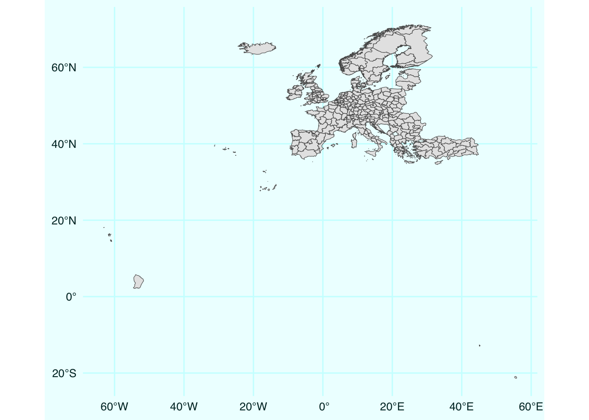

Did you ever think why we (okay, I’m clearly biased, maybe just many of us, humans) love maps so much? Why do they often work so much better than other types of dataviz?
I think1 what makes the maps work is the speed with which we can recognize familiar shapes, most often countries. That’s why it’s so annoying when these shapes get distorted – it hinders the smoothness of reading the map and kills the pleasure of the process. I’m sure this is the main reason why cartograms exist forever as a cool idea but are rarely actually used – people love the concept of them but hate actually looking at them. I deeply believe that immediate shape recognition is the kill feature of maps as a type of dataviz.
1 And here I have to say that I’m not an expert in the area of visual perception or psychology of human processing of dataviz. I know this is a huge, thrilling area of research, I just never followed systemically. Strictly speaking, what I’m going to tell further is likely some digested version of what I’ve seen, read, and thought through over years of being into dataviz.
Geographic projections are a huge field of research in itself. There are infinite ways to project the spherical globe (geoid) to the surface. It’s a classical challenge with no single correct solution. Specific choice depends on the features we want to preserve/represent most correctly — distances, angles, shapes, or areas. In my experience, for most of our daily basic dataviz needs the most important is the shape — it helps recognizing objects and thus navigating through maps smoothly.
There is a brilliant 6-min video explainer of maps projections, I heartily recommend:
Beware, the choice of appropriate map projection can be a rabbit hole as deep as choosing fonts or colors for your dataviz – you are warned. In all practical terms, a good strategy is to check what are the canonical projections for the territories one plans to map – that would help not to repel the reader through instantaneous non-recognition of the shape. One good resource for the task is http://epsg.io.
Just accept that the perfect projection does not exist – there’s no such thing as free lunch perfect projection. Map projections always excel or fail in specific contexts. Here is an example when a very non-standard geographic projection is just perfect for the data it is showing and the story it is telling.
Even the most famous and oftenridiculed Mercator projection has its major advantages – it preserves the angles and that’s why it was perfect for the early age of navigation. It’s also pretty safe at preserving coordinates and thus most often is used as the basic projection in which geodata is stored and distributed. And this is the reason why we see it in published maps so often. Honestly, I’m really allergic to the view of Europe in Mercator projection.
And it’s just unbelievable how often these repulsing maps come across in academic papers. Especially when you know that it really takes one line of code to fix it. So let’s see how it’s done.
For the illustration below I will produce maps of Europe in (A) Mercator and (B) Lambert Equal Area Azimuthal projections, as usual using the beautiful geodata stored in the {eurostat} package.
library(tidyverse)library(sf)library(eurostat)# the built-in dataset of EU boundariesgd <- eurostat_geodata_60_2016 |> janitor::clean_names() # filters out only NUTS-2 regions gd_n2 <- gd |>filter(levl_code ==2) # let's build the most basic mapgd_n2 |>ggplot() +geom_sf()

Note all the overseas territories of France, Spain, and Portugal. At the next step I will remove them to zoom in to the usual scope of mainland Europe. I will also add borders between the countries as lines.
# remove overseas territoriesgd_n2_main <- gd_n2 |>filter(!id %in%c(paste0('ES', c(63, 64, 70)), paste('FRY', 1:5, sep =''), 'PT20', 'PT30' ) ) # the lines level with borders at country levelbord <- gd |>filter(levl_code ==0) |> rmapshaper::ms_innerlines()
Now, back to reprojecting. There are two ways of changing the projections with {sf}: either apply st_transform(crs = [EPSG code]) to change your the projection of the geodata object OR fix it directly at the plotting stage via coord_sf(crs = [EPSG code]). I think it’s generally easier to reproject the data once and work with it (panel B). But for completeness I will also show the on-the-fly coord_sf() when plotting in Mercator projection (panel A).
# transform the projection to the one suitable for Europegd_n2_main_laea <- gd_n2_main |>st_transform(crs =3035)a <- gd_n2_main |>ggplot() +geom_sf(fill ="#F48FB1", color =NA)+geom_sf(data = bord, color ="#C2185B", size = .5)+coord_sf(crs =3857)b <- gd_n2_main_laea |>ggplot() +geom_sf(fill ="#DCE775", color =NA)+geom_sf(data = bord, color ="#AFB42B", size = .5)library(patchwork)a + b +plot_annotation(tag_levels ="A")
That’s it. That’s the whole one-line trick. Check out my other post based on my dataviz course materials.
This post is one in the dataviz course series. Other posts:
---title: "Improve your maps in one line of code changing map projections"description-meta: "{{< meta website.description >}}"date: "2023-11-04"image: teaser.pngcategories: [r, rspatial, ggplot2]---```{r, include=FALSE}knitr::opts_chunk$set( message = FALSE, warning = FALSE, out.width = "100%", out.height = "100%")devtools::source_gist("653e1040a07364ae82b1bb312501a184")theme_set(theme_ik())```***Did you ever think why we (okay, I'm clearly biased, maybe just many of us, humans) love maps so much? Why do they often work so much better than other types of dataviz? I think[^1] what makes the maps work is the speed with which we can recognize familiar shapes, most often countries. That's why it's so annoying when these shapes get distorted -- it hinders the smoothness of reading the map and kills the pleasure of the process. I'm sure this is the main reason why [cartograms][cart] exist forever as a cool idea but are rarely actually used -- people love the concept of them but hate actually looking at them. I deeply believe that immediate shape recognition is the kill feature of maps as a type of dataviz.[^1]: And here I have to say that I'm not an expert in the area of visual perception or psychology of human processing of dataviz. I know this is a huge, thrilling area of research, I just never followed systemically. Strictly speaking, what I'm going to tell further is likely some digested version of what I've seen, read, and thought through over years of being into dataviz. Geographic projections are a huge field of research in itself. There are infinite ways to project the spherical globe (geoid) to the surface. It's a classical challenge with no single correct solution. Specific choice depends on the features we want to preserve/represent most correctly — distances, angles, shapes, or areas. In my experience, for most of our daily basic dataviz needs the most important is the shape — it helps recognizing objects and thus navigating through maps smoothly.There is a brilliant 6-min video explainer of maps projections, I heartily recommend:<iframe width="100%" height="650" src="https://www.youtube.com/embed/kIID5FDi2JQ" title="YouTube video player" frameborder="0" allow="accelerometer; autoplay; clipboard-write; encrypted-media; gyroscope; picture-in-picture" allowfullscreen></iframe>Beware, the choice of appropriate map projection can be a rabbit hole as deep as choosing fonts or colors for your dataviz -- you are warned. In all practical terms, a good strategy is to check what are the canonical projections for the territories one plans to map – that would help not to repel the reader through instantaneous non-recognition of the shape. One good resource for the task is http://epsg.io.Just accept that the perfect projection does not exist -- there's no such thing as ~~free lunch~~ perfect projection. Map projections always excel or fail in specific contexts. Here is an example when a very non-standard geographic projection is just perfect for the data it is showing and the story it is telling.[{width=70%}][natgeo]Here is another [animated example][volc].Even the most famous and [often][m1][ridiculed][m2] Mercator projection has its major advantages -- it preserves the angles and that's why it was perfect for the early age of navigation. It's also pretty safe at preserving coordinates and thus most often is used as the basic projection in which geodata is stored and distributed. And this is the reason why we see it in published maps so often. Honestly, I'm really allergic to the view of Europe in Mercator projection.[{width=70%}][badeu]And it's just unbelievable how often these repulsing maps come across in academic papers. Especially when you know that it really takes one line of code to fix it. So let's see how it's done.***For the illustration below I will produce maps of Europe in (A) Mercator and (B) Lambert Equal Area Azimuthal projections, as usual using the beautiful geodata stored in the `{eurostat}` package. ```{r}library(tidyverse)library(sf)library(eurostat)# the built-in dataset of EU boundariesgd <- eurostat_geodata_60_2016 |> janitor::clean_names() # filters out only NUTS-2 regions gd_n2 <- gd |>filter(levl_code ==2) # let's build the most basic mapgd_n2 |>ggplot() +geom_sf()```Note all the overseas territories of France, Spain, and Portugal. At the next step I will remove them to zoom in to the usual scope of mainland Europe. I will also [add borders between the countries as lines][bord].```{r}# remove overseas territoriesgd_n2_main <- gd_n2 |>filter(!id %in%c(paste0('ES', c(63, 64, 70)), paste('FRY', 1:5, sep =''), 'PT20', 'PT30' ) ) # the lines level with borders at country levelbord <- gd |>filter(levl_code ==0) |> rmapshaper::ms_innerlines()```Now, back to reprojecting. There are two ways of changing the projections with {sf}: either apply `st_transform(crs = [EPSG code])` to change your the projection of the geodata object OR fix it directly at the plotting stage via `coord_sf(crs = [EPSG code])`. I think it's generally easier to reproject the data once and work with it (panel B). But for completeness I will also show the on-the-fly `coord_sf()` when plotting in Mercator projection (panel A). ```{r, warning=FALSE, fig.width=16, fig.height=8}#| column: screen-inset# transform the projection to the one suitable for Europegd_n2_main_laea <- gd_n2_main |> st_transform(crs = 3035)a <- gd_n2_main |> ggplot() + geom_sf(fill = "#F48FB1", color = NA)+ geom_sf(data = bord, color = "#C2185B", size = .5)+ coord_sf(crs = 3857)b <- gd_n2_main_laea |> ggplot() + geom_sf(fill = "#DCE775", color = NA)+ geom_sf(data = bord, color = "#AFB42B", size = .5)library(patchwork)a + b + plot_annotation(tag_levels = "A")```That's it. That's the whole one-line trick. Check out my other post based on my [dataviz course materials][dv].***::: {.callout-note}# This post is one in the **dataviz course series**. Other posts:- [The easiest way to radically improve map aesthetics][bord]- [Show all data in the background of your faceted ggplot][bg]- [Dotplot – the single most useful yet largely neglected dataviz type][dotplot]- [Save space in faceted plots][shrink]- [Geocode address text strings using `tidygeocoder`][gcode]:::[cart]: https://r-graph-gallery.com/cartogram.html[30d]: https://30daymapchallenge.com[volc]: https://twitter.com/ikashnitsky/status/1261186743585386496[m1]: https://twitter.com/ikashnitsky/status/1442512307502780422[m2]: https://twitter.com/ikashnitsky/status/1531395881559375872[natgeo]: https://ikashnitsky.phd/2023/map-proj/natgeo.png[badeu]: https://ikashnitsky.phd/2023/map-proj/badeu.png[dv]: https://github.com/ikashnitsky/dataviz-art-skill[bord]: https://ikashnitsky.phd/2023/map-borders/[bg]: https://ikashnitsky.phd/2020/background-data/[dotplot]: https://ikashnitsky.phd/2019/dotplot/[shrink]: https://ikashnitsky.phd/2023/shrink-space/[gcode]: https://ikashnitsky.phd/2023/geocoding/
![]()

{kind=link}